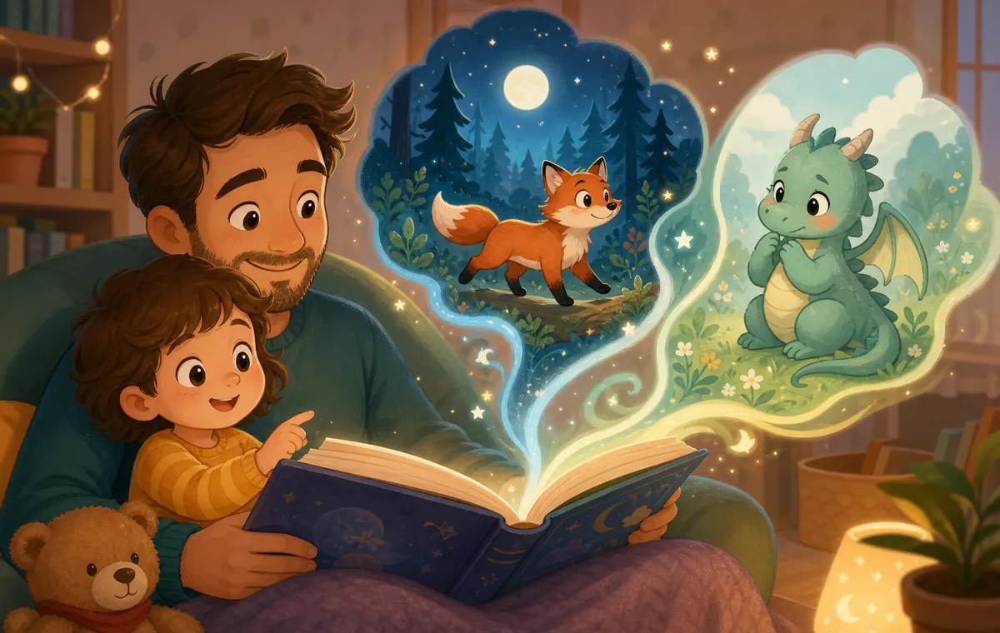

Reading aloud gives kids far more than a finished plot. It can build vocabulary, attention, empathy, memory, confidence, and a secure feeling of being close to you. The secret is to make the story feel alive and responsive, not rushed.
Baboo Stories is designed for exactly this kind of shared reading: short, imaginative stories with gentle prompts that invite families to talk, move, cuddle, and invent together. Use the app when you want a fresh idea, then make it your own.
1. Start with closeness before words
Before the first sentence, create a tiny ritual. Let your child choose the blanket, sit on your lap, lean beside you, or hold your hand. A cuddle at the beginning tells their body, “This is safe. This is our time.” When kids feel settled, they listen more deeply.
- Try a “story snuggle” before opening the book.
- Invite dads, grandfathers, uncles, and other father figures into the routine so children hear different voices and feel supported by more than one caring adult.
- Keep your phone away unless you are using a story app together.
2. Let kids change the story here and there
You do not need to follow every line exactly. Small changes can turn passive listening into creative thinking. Ask, “Should the fox go through the forest or over the moon?” or “What if the dragon is scared instead of angry?” These choices teach cause and effect while making your child feel like a co-author.

Keep the changes simple. Swap a character name for your child’s name, give the hero a silly snack, or let your child choose whether the next page needs whispering, roaring, or tiptoeing.
3. Add actions that match the moment
Movement helps kids remember language. If the bear stretches, stretch together. If the mouse tiptoes, tiptoe your fingers across the blanket. If a character feels brave, sit tall and take one superhero breath. These tiny actions give meaning to new words.
- Use one action per page so storytime stays calm.
- Pair feeling words with body cues: droopy shoulders for sad, wide eyes for surprised, slow breathing for calm.
- End high-energy scenes with a cuddle, a deep breath, or a quiet page turn.
4. Ask fewer, better questions
Too many questions can feel like a quiz. Choose warm prompts that invite imagination: “What would you do?” “Why do you think she hid?” “Who could help him?” Give your child time to answer, even if the answer is a gesture, a sound effect, or one word.
5. Repeat favorite lines, then expand them
Children often ask for the same story because repetition is how they master patterns. Celebrate it. Let them finish a familiar phrase, then add one new idea: “Yes, the boat is big. It is a big, wobbly boat!” That gentle expansion grows vocabulary without interrupting the fun.
6. Use different voices, including father-figure voices
Kids benefit from hearing stories in many voices. A father figure might read the giant with a booming voice, the rabbit with a whisper, or the narrator with calm steadiness. The goal is not acting talent; it is emotional variety, warmth, and attention.
7. Connect the story to real life
After a page about sharing, say, “That reminds me of when you shared blocks today.” After a scene about fear, say, “Sometimes new places feel strange.” These connections help kids name their own experiences and understand other people’s feelings.
8. Finish with a predictable landing
End with the same gentle signal each time: close the book together, thank the story, choose one favorite moment, and share a final hug. Predictable endings help kids transition from imagination back to bedtime, nap time, or the next family activity.
A simple storytime recipe
| Step | What to do | Why it helps |
|---|---|---|
| Connect | Cuddle, breathe, and choose the story together. | Builds safety and attention. |
| Read | Use expression, pauses, and a relaxed pace. | Supports listening and vocabulary. |
| Alter | Change one choice, name, setting, or action. | Builds imagination and ownership. |
| Act | Add gestures, sound effects, or gentle movement. | Makes meaning memorable. |
| Reflect | Ask one feeling or “what if” question. | Strengthens empathy and comprehension. |
Need a fresh story tonight?
Open Baboo Stories for playful story ideas you can read as written or bend in your own direction. Change choices, add cuddles, invite a father figure to take a turn, and make the adventure sound like your family.
Baboo Stories is a calmer bedtime story app for parents who want to read, bond, and help toddlers wind down with gentle read-aloud stories.